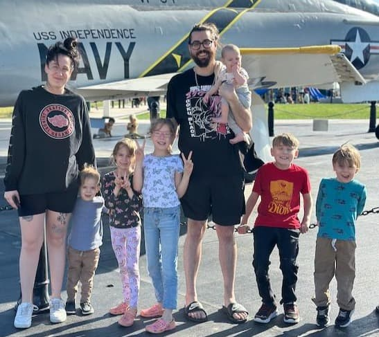

Dominic Trujillo-Grissom | WDD 130
Hey! My name is Dominic Trujillo-Grissom and I live in Gastonia, North Carolina. I am originally from Albuquerque, New Mexico but moved across the country with my wife and two of our kids seven years ago. Currently I am a proud father of six amazing kids and husband to my beautiful wife Jodeci. I am learning software development here at BYU Idaho and am so excited to further my career. I hope to gain as much knowledge as I can to succeed. I am happy to be here and ready to learn!